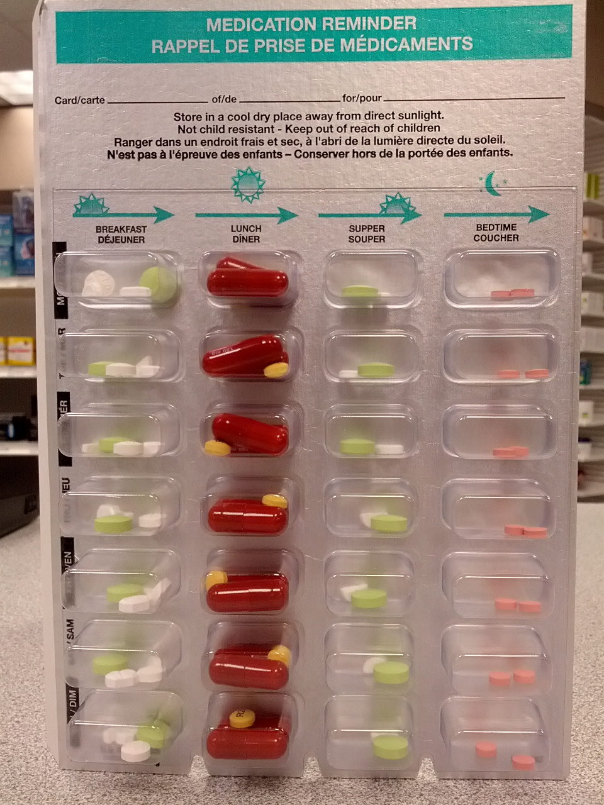

Mnemônico-âncora · Pág. 12 de 20
Tratar = epiléptico: monoterapia, nível sérico e quando parar
A âncora vem antes da escada: só se inicia anticonvulsivante contínuo quando o paciente é epiléptico. Depois sobe-se degrau por degrau — monoterapia baixa, nível sérico, segundo fármaco — e só se pensa em parar depois de ≥2 anos sem crise.
Portão de início · “É epilepsia?”
2ª não provocada ou 1ª com lesão / síndrome
monoterapia · dose baixa
nível sérico + adesão
Sono e estímulos
O tratamento inclui medidas comportamentais: o cérebro com tendência a hiperexcitabilidade pede vida regrada. A higiene do sono é central — a privação deflagra crise, e algumas crises preferem o sono. Luzes piscantes intensas (ex.: jogos) podem deflagrar em suscetíveis.
Sono é condutor
Antes de culpar a droga, olhe o sono: privação é gatilho direto e corrigível. Higiene do sono faz parte da receita, não é conselho paralelo.
Quando iniciar AED
Consenso: a partir da 2ª crise não provocada ou da 1ª crise com lesão cerebral. Regra de ouro: indica-se AED quando o paciente é epiléptico.
Semente febril: se a crise febril não é epilepsia, não pensar em AED contínuo por esse motivo. A porta do tratamento é a mesma porta da definição.
Monoterapia e titulação
Início: monoterapia, dose baixa, titulação progressiva até a faixa terapêutica. Na faixa adequada sem crises → manter.
Nível sérico e 2º fármaco
Na faixa adequada com crises → dosar o nível sérico (absorção, indutores, ajuste). Nível ok e ainda crises → associar 2º fármaco, preferencialmente com mecanismo diferente, titulado. Após controle: tentar retirar o 1º que falhou e voltar a monoterapia, se possível.
VFP [128]: mais da metade estabiliza com um medicamento só (~50% com a 1ª droga em séries clássicas; até ~60–70% com regime otimizado — ordem de grandeza).
≥2 anos sem crise
Pensa-se em parar o AED: em geral ≥2 anos sem crise (a recorrência tende a ser temporalmente próxima das crises iniciais). “Pensar em parar” não é parar cego: genéticas da infância com remissão — mais fácil; lesão estrutural (ex.: NCC) — mais inseguro. A discussão de retirada é especialmente relevante em pediatria.

Resumo operacional
Só epiléptico leva AED contínuo; monoterapia baixa; >½ estabiliza com uma droga; pensar em parar em ≥2 anos sem crise (cautela se lesão).
Por que importa
Empilhar fármacos sem checar adesão/nível sérico é o erro mais comum; parar cedo na lesão estrutural é a recaída evitável.
Quiz
Conexão
A droga certa depende do tipo de crise — e há uma que salva a focal e piora a mioclonia.